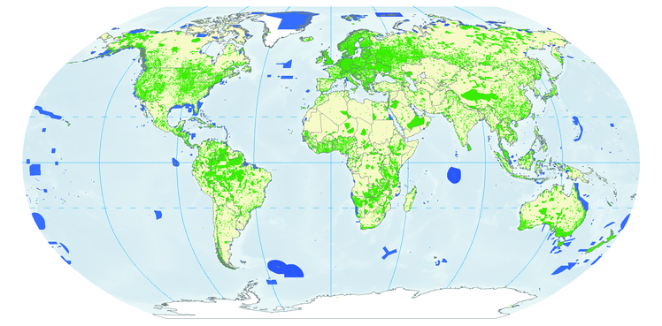
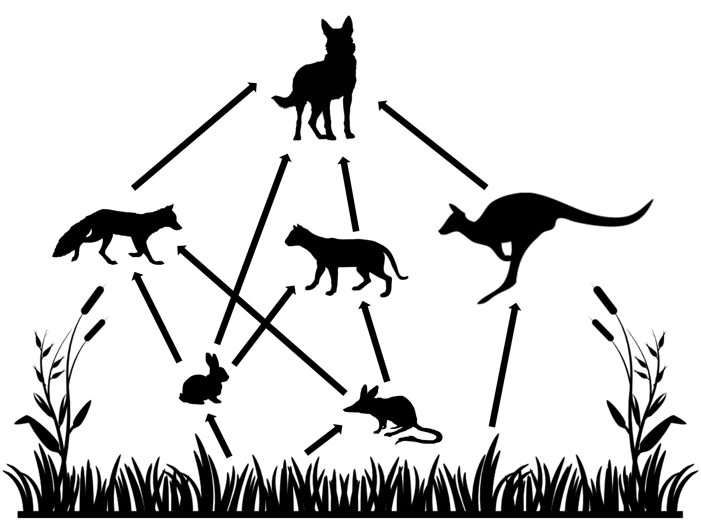
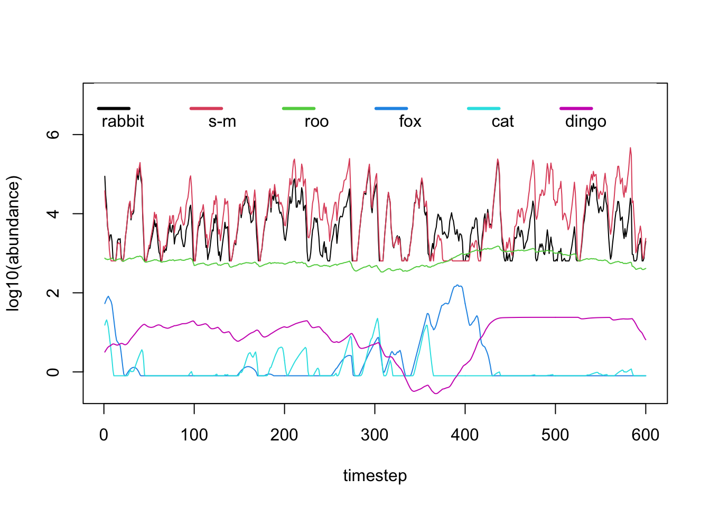
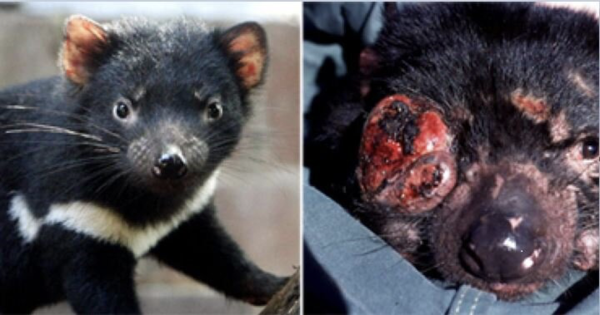

4.- Ecological Applications
As we saw in the previous section, different stressors associated to global change are prompting a dramatic re-organisation of ecosystems worldwide. Their most studied and noticeable effect is species loss, but another facet of biodiversity, species interactions, is also affected.
To counter the effects of these stressors, different conservation measures are adopted. In many cases these measures are devised in an ad-hoc manner and rarely consider the full consequences of adopting them.
Protected Areas for Biodiversity Conservation

One of the prime examples of measures adopted specifically aimed at protecting biodiversity is the establishment of protected areas for conservation. Protected areas are pieces of land (or water, in the case of marine protected areas) within which human activities are reduced to one extent or another. Different levels of protection exist, depending on the type and magnitude of human activities allowed within. In the strictest sense, protected areas with the highest level of protection forbid any kind of human activities. For obvious reasons (e.g. exploitation of natural resources for the benefit of humans and economic growth), establishing protected areas with the highest level of protection is very difficult. Strictly protected areas are thus usually found in remote locations of little interest or value to humans.

Ideally, rather than setting them up in locations of little economic interest to humans, protected areas should be designed in such a way to obtain the most effective outcome to protect biodiversity, either at the species or the ecosystems level. Research efforts aiming at designing effective protected areas have been developed grounded on mechanistic models and theory that rely heavily on spatial biodiversity considerations akin to those explored in section 2 (e.g. Moilanen et al. 2009). Mechanistic ecological models can thus help us define effective conservation strategies.
In spite of the availability of these frameworks, many protected areas around the world are still set up as a last resort when particular habitats are threatened and only a fraction of them is left. In many instances, the effectiveness of these protected areas is not known. Recent efforts have have been focusing on obtaining a better understanding of this. Cazalis et al. (2020) (plot on the left) showed that when looking at the number of species of forest birds, the effect of protected areas in tropical forests on biodiversity is negligible, and in some cases even detrimental. This picture changes when focusing on specific species groups. Disparate results like this highlight the need for obtaining a better understanding of conservation actions, such as protected areas, on biodiversity at regional to global scales. In particular, we need a better understanding of how effective are these areas at protecting other facets of biodiversity, such as species interactions.
At the Computational Ecology Lab we are working towards this understanding from a network perspective, with the ultimate goal of assessing the effectiveness of protected areas in protecting species interactions networks and the properties that they confer to ecosystems.
Managing Invasive Species: The Community Context Matters

One of the classical results in theoretical food web ecology is the importance of the potential for cascading effects of species removals (or disturbance) on other species in the ecosystem (e.g. Pimm, 1982). Ever since then, field ecologists set out find examples of this in Nature. It turns out there are many! (see Estes et al., 2011 for a review).
This realisation is important because it has profound implications for the ways we approach ecosystems. It not only highlights the indirect effects that species might have on each other when they are tangled in a complex networks of species interactions in ecosystems, but it also warm us of the potential hidden effects that can be caused on ecosystems by the disturbance of individual species. These effects might not be apparent until they become irreversible. For example, secondary extinctions after the removal or introductions of species.
One scenario in which these indirect effects are of fundamental importance is when developing management strategies for invasive species. Once invasive species have established themselves in native ecosystems, they become integral part of the ecosystem structure and dynamics. Actions aimed at removing established alien species are thus expected to produce changes in the ecosystem comparable to those resulting from removing other native species.
The figure below (taken from Zavaleta et al. 2001) shows some examples of the likely effects of removing invasive species that have been established in ecosystems either by themselves or with other alien species.
Predicting the full effects of invasive species removal on ecosystems can be a difficult task, especially if we aim at more quantitative predictions than those shown in the figure. In 2018 we aimed at this focusing on the Australian semi-arid ecosystem, which has been invaded by several introduced species such as the European rabbit (Oryctolagus cuniculus), the red fox (Vulpes vulpes), and the feral cat (Felis catus). We aimed at obtaining a better understanding of the potential cascading effects of managing (by killing) rabbits (the invasive species focus of control actions) on the rest of the ecosystem, with a particular emphasis on small marsupial species. In Australia, the introduction of rabbits in particular, has been identified as one of the causes of extinction and drastic decline of several endemic marsupial species. It is then important to understand the full effects of potential management actions aimed at protecting these species.

To tackle this problem we adopted a model similar in spirit to the Generalised Lotka-Volterra model introduced in the previous section but in discrete time. When modelling ecological dynamics of species displaying non-overlapping generations, discrete time (or difference, rather than differential) equations are usually adopted. In this example functional responses (i.e. the predation effect of predator over prey) and the numerical responses (i.e. the growth of a species population accounting for intrinsic growth, consumption and loss to predation) are modeled independently and are different across species. The food web modeled can be seen on the right, and the equations governing the numerical and functional responses of the herbivores are presented below. The remaining equations are similar with slight modifications depending on the shape of functional and numerical responses of the different species observed in empirical studies. The full set of equations is not presented here for simplicity, but you are welcome to find the full details of the model in Lurgi et al. 2018.
Numerical response of herbivores:
where N is the species identifier, is the growth rate
of species N at time t,
its maximum instantaneous rate of
decline,
is the rate at which
is ameliorated,
is the demographic efficiency of
species N,
is the pasture
biomass at previous time step, and
is the total
predation pressure on species N from all its predators during
the previous time step.
Functional responses of herbivores:
where B is the biomass harvested for
consumption from the resources, w is the average body weight,
is the maximum consumption rate of the
herbivore species,
is the vegetation biomass at time
t, f is the foraging efficiency of the herbivore, and
is the
abundance of the herbivore in the previous time step.
The computer code for this model (including the equations not shown above but that can be found in the paper) is presented below. You can use this code to run simulations that will yield the results of experiments modeling the disturbance (in the form of decreased abundance, to simulate culling) of rabbits in the ecosystem and the corresponding effects on the other species in the food web within which it is embedded.
Before defining the model we need to initialise a series of empirically derived parameters. All this information comes from intensive study of the system. This illustrates the fact that modelling for ecological applications is very often a very data intensive task.
#### Parameter values
veg_term1 <- 55.12
veg_term2 <- 0.0153
veg_term3 <- 0.00056
veg_term4 <- 2.5
min_fox <- 0.0001
min_cat <- 0.0001
roo_weight <- 26
##### fox parameters
min_r_fox <- 0.56
upper_r_fox <- 0.77
d_fox <- 3.2 # demographic efficiency
max_c_fr <- 1.096
max_c_fb <- 1.096
# half saturation density for functional responses
hs_rab_f <- 1.32 # over rabbit
hs_bilby_f <- 0.99 # over bilby
##### end fox parameters
##### cat parameters
min_r_cat <- 0.56
upper_r_cat <- 0.81
d_cat <- .6 # this is the demographic efficiency for cats - varied between 2 and 5 in Robley's report
max_c_cr <- 0.874
max_c_cb <- 2.874
# half saturation density for functional responses
hs_rab_c <- 0.5 # over rabbit
hs_bilby_c <- 0.99 # over bilby
##### end cat parameters
##### small native mammal parameters
bilby_weight <- 0.782
min_r_bilby <- 4.6
upper_r_bilby <- 5.5
d_bilby <- 0.0045
##### end small native mammal parameters
##### rabbit parameters
rabbit_weight <- 0.782
min_r_rabbit <- 4.6
upper_r_rabbit <- 5.5
d_rabbit <- 0.0045
# the following two parameters are applied to both rabbits and small mammals
max_c_rv <- 0.068 # maximum intake of vegetation by rabbit
f_rv <- 138 # foraging efficiency of rabbit on vegetation
###### end rabbit parameters
##### dingo parameters
max_c_dk <- 0.68 # maximum intake rate of kangaroo
f_dk <- .1 # foraging efficiency on kangaroo
max_c_dr <- 0.2 # maximum intake rate of rabbit
f_dr <- .4 # foraging efficiency on rabbit
min_r_dingo <- 1.22 # maximum rate of decrease
max_r_dingo <- 0.63
d_dingo <- 2.5 # demographic efficiency of dingo
K_dingo <- 0.003 # carrying capacity of dingo per hectare
d_int_fox <- .7 # maximun killing rate of fox
d_int_cat <- .3 # maximum killing rate of cat
f_df <- 0.3 # foraging efficiency on fox
f_dc <- 0.3 # foraging efficiency on cat
##### end dingo parameters
##### kangaroo parameters
min_r_roo <- 1.6 # maximum rate of decrease of kangaroo
upper_r_roo <- 1.7496
d_roo <- 142.9
max_c_kv <- 0.086
f_kv <- 34
##### end kangaroo parametersOnce the parameters above are defined, we can implement the model equations.
# This function contains the model specifications. It executes one single iteration of the model
# following the mathematical formulation presented in Lurgi et al. (2018) Journal of Applied Ecology
ExecuteIterationGeneralised <- function(current_abs, i, current_qt, kill='', fraction=0){
###### species order (and index) in current_abs (and next_abs) (vectors of abundances):
###### vegetation (1), rabbit (2), small-mammal (3), kangaroo (4), fox (5), cat (6), dingo (7)
veg <- current_abs[1]
rabbits <- current_abs[2]
bilby <- current_abs[3]
roos <- current_abs[4]
fox <- current_abs[5]
cat <- current_abs[6]
dingoes <- current_abs[7]
if(current_qt == 3){
if(kill == 'rabbit'){ rabbits <- rabbits - (rabbits * fraction) }
if(kill == 'dingo' ){ dingoes <- dingoes - (dingoes * fraction) }
if(kill == 'fox'){ fox <- fox - (fox * fraction) }
if(kill == 'cat'){ cat <- cat - (cat * fraction) }
}
R <- rainfall_data[ceiling(i/4),(current_qt+1)]
####### gains (numerical responses)
veg_per_ha <- veg/8000
veg_growth <- (-veg_term1) - (veg_term2 * veg_per_ha) - (veg_term3 * (veg_per_ha**2)) + (veg_term4 * R)
veg_growth <- veg_growth * 8000
g_rabbits <- ( ( (max_c_fr / rabbit_weight) * ((rabbits)**2)) / ( ((hs_rab_f*8000)**2) + (rabbits)**2) )
rabbits_taken_fox <- ((365/4) * ( ((fox) * g_rabbits) / (rabbits) ))
g_rabbits_cat <- (( (max_c_cr / rabbit_weight) * (rabbits)) / (( hs_rab_c * 8000) + (rabbits)))
rabbits_taken_cat <- ((365/4) * ( ((cat) * g_rabbits_cat) / (rabbits) ))
g_bilbies <- ( ( (max_c_fb/ bilby_weight) * (bilby)) / ( (hs_bilby_f * 8000) + (bilby)) )
bilbies_taken_fox <- ((365/4) * ( ((fox) * g_bilbies * (1 - (g_rabbits/max_c_fr)) ) / (bilby) ))
g_bilbies_cat <- ( ( (max_c_cb / bilby_weight) * (bilby)) / ( (hs_bilby_c * 8000) + (bilby)) )
bilbies_taken_cat <- ((365/4) * ( ((cat) * g_bilbies_cat * (1 - (g_rabbits_cat/max_c_cr)) ) / (bilby) ))
bilby <- (bilby * exp( (-min_r_bilby + (upper_r_bilby *(1 - exp(-d_bilby*veg/8000) ))) - bilbies_taken_fox - bilbies_taken_cat ) )
if(is.na(bilby) | bilby < (0.08*8000)){
bilby <- (0.08*8000)
}
#functional response of dingo
I_dingo <- .745 * (1-exp(-(roos/8000)/f_dk))
I_dingo_rab <- max_c_dr * (1-exp(-(rabbits/8000)/f_dr))
dingo_numerical <- ( (-min_r_dingo + ((I_dingo + I_dingo_rab) * d_dingo)) )
##### in the following the variable 'dingo_numerical', which is actually the rate
##### of increase of the dingo, is divided by 4 because this is an annual rate of increase
##### see Forsyth's code for details...
if(dingo_numerical < 0){
dingoes <- dingoes * exp(dingo_numerical/4)
}else{
dingo_numerical <- (dingo_numerical * ( 1 - (dingoes / (K_dingo * 8000) )))/4 #### 24 is the carrying capacity for dingo at 8000 ha
if(dingo_numerical > max_r_dingo){
dingo_numerical <- (max_r_dingo)/4
}
dingoes <- dingoes * exp(dingo_numerical)
}
if(is.na(dingoes) | dingoes < (0.0000025 * 8000)){
dingoes <- (0.0000025 * 8000)
}
##### kangaroos taken by dingo
roos_taken <- dingoes * I_dingo
#### numerical response of kangaroo
roos <- (roos * exp( ( - min_r_roo + (upper_r_roo * ( 1 - exp( - (veg/8000) / d_roo ) )) )/4 )) - roos_taken
if(is.na(roos) | roos < (0.001 * 8000)){
roos <- (0.001 * 8000)
}
#### rabbits losses and numerical reponses
rabbits_taken_dingo <- ((365/4) * ( ((dingoes) * I_dingo_rab) / (rabbits) ))
rabbits_taken <- rabbits_taken_fox + rabbits_taken_cat + rabbits_taken_dingo
rabbits <- (rabbits * exp( (- min_r_rabbit + (upper_r_rabbit *(1 - exp(-d_rabbit*veg/8000) ))) - rabbits_taken ))
if(is.na(rabbits) | rabbits < (0.08*8000)){
rabbits <- (0.08 * 8000)
}
# numerical responses of fox and cat
# d_int is the predator intake efficiency - in this case how good they are at killing the other predators
I_dingo_fox <- d_int_fox * (1 - exp(-(fox/8000)/f_df))
fox_killed_dingo <- ((dingoes * I_dingo_fox) * (365/4))
fox <- (fox * (exp( -min_r_fox + (upper_r_fox * (1 - exp(-d_fox*(rabbits/8000 + bilby/8000) ) ) ))) - fox_killed_dingo)
# from the report: r =−a+c(1−e−dR)−hF
I_dingo_cat <- d_int_cat * (1-exp(-(cat/8000)/f_dc))
cat_killed_dingo <- ((dingoes * I_dingo_cat) * (365/4))
cat <- (cat * exp( -min_r_cat + (upper_r_cat * (1 - exp(-d_cat * (rabbits/8000+bilby/8000) ) )) ) - cat_killed_dingo)
if(fox < (min_fox*8000)){
fox <- (min_fox * 8000)
}
if(cat < (min_cat * 8000)){
cat <- (min_cat * 8000)
}
veg <- veg + veg_growth
######## vegetation losses (functional responses of herbivores)
veg_taken_rabbits <- ((rabbits) * ( ( max_c_rv * (1-exp(-(veg/8000)/f_rv)) * (rabbit_weight**(0.75)) ) * (365/4) ))
veg_taken_bilby <- ((bilby) * ( ( max_c_rv * (1-exp(-(veg/8000)/f_rv)) * (rabbit_weight**(0.75)) ) * (365/4) ))
veg_taken_roos <- (roos * ( ( max_c_kv * (1-exp(-(veg/8000)/f_kv)) * (roo_weight**(0.75)) ) * (365/4) ))
veg <- veg - veg_taken_rabbits - veg_taken_bilby - veg_taken_roos
if(veg < 0){ veg <- 10 }
next_abs <- c(veg, rabbits, bilby, roos, fox, cat, dingoes)
responses <- c(veg_taken_rabbits, veg_taken_bilby, veg_taken_roos, rabbits_taken_fox, bilbies_taken_fox, rabbits_taken_cat, bilbies_taken_cat, rabbits_taken_dingo, roos_taken, fox_killed_dingo, cat_killed_dingo)
return(list(next_abs=next_abs, responses=responses))
}As you can see in the code above, one of the defining features of applied models (i.e. those targeted to a particular system for which we want to obtain specific predictions) are full of parameters that have very specific and precise values. These values are usually (as in this case) extracted from empirical information that has been collected over many years of study of the corresponding system. This illustrates one of the key differences between developing ecological models to study specific systems, commonly for very applied problems (like the example above), and ecological models to construct theory and derive theoretical expectations on the behaviour of a broader class of systems (like the Generalised Lotka-Volterra example discussed in the previous section).
Now that we have the implementation of the model, we can run some simulations and study the behaviour of the system.
# Seed to ensure reproducibility
set.seed(9315)
# numbers of time step in the simulation
steps <- 600
# values extracted from empirical observations of the abundance ranges of each species
veg <- runif(1, min=1600000, max=3200000)
rabbit <- runif(1, min=17600, max=120000)
sm <- runif(1, min=17600, max=120000)
roo <- runif(1, min=400, max=1600)
fox <- runif(1, min=48, max=72)
cat <- runif(1, min=7.2, max=17.6)
dingo <- runif(1, min=2.4, max=24)
dynamics <- array(dim=c(steps, 7))
dynamics[1,] <- c(veg, rabbit, sm, roo, fox, cat, dingo)
steps_per_qt <- ceiling(steps/4)+1
#### rainfall data from Lerida (Yathong)
rainfall_data <- data.frame('1'=rnorm(steps_per_qt,99,69), '2'=rnorm(steps_per_qt,87,67), '3'=rnorm(steps_per_qt,82,39), '4'=rnorm(steps_per_qt,80,49))
rainfall_data[rainfall_data < 0] <- 0
current_qt <- 1
# the species to be managed
sp <- 'rabbit'
# the management level
l <- 0
for(i in 1:(steps-1)){
cur_abs <- dynamics[i,]
# control is only applied for a fraction of the simulation between timesteps 200 and 400
if(i >= 201 & i <= 400){
exec <- ExecuteIterationGeneralised(cur_abs, i, current_qt, sp, l)
next_abs <- exec$next_abs
}else{
exec <- ExecuteIterationGeneralised(cur_abs, i, current_qt)
next_abs <- exec$next_abs
}
dynamics[(i+1),] <- next_abs
current_qt <- (current_qt+1)%%4
}
matplot(log10(dynamics[,-1]), type='l', lty=1, col=c(1,2,3,4,5,6), ylim=c(-.5,7), ylab = 'log10(abundance)', xlab = 'timestep')
legend('top', c("rabbit", "s_m", "roo", "fox", "cat", "dingo"), pch = "-", col = c(1,2,3,4,5,6), box.lwd=0, y.intersp = 1.5, horiz=TRUE, lwd=3, adj=c(1,1.5))
And if we change the value of parameter from the code above to any other value
between 0 and 1, such as for example, 0.9, we can see what
happens in the community when the rabbit abundance is reduced
by that amount:
Controlling Disease Spread in Wildlife Populations
Disease spread within wildlife populations is a major issue of conservation concern. Traditionally, the behaviour of disease dynamics in populations is studied using SIR(S)-type models. SIR(S) models, as in Susceptible, Infected, and Recovered (or Susceptible -again-), are state-based models in which the focus is on tracking the dynamics of the number (or fraction) of susceptible, infected, and recovered (or susceptible again) individuals within the population through time. These kind of models are specified thus:
where S is the number / fraction of susceptible, I
of infected and R of recovered individuals. Susceptible
individuals become infected with an infectious contact rate of when encountering an
infected individual, and infected individuals recover from the disease
at a rate
. In SIR models,
infected individuals exit the system when they move to the recovered
state. In SIS models, on the other hand, infected individuals become
again susceptible can become infected again.
The code below provides an implementation of the SIR model and the resulting dynamics when the model is integrated through time.
# Code for the implementation of the SIR model for disease dynamics
# Taken from: https://rpubs.com/choisy/sir
require(deSolve)
sir_equations <- function(time, variables, parameters) {
with(as.list(c(variables, parameters)), {
dS <- -beta * I * S
dI <- beta * I * S - gamma * I
dR <- gamma * I
return(list(c(dS, dI, dR)))
})
}
# definition of parameters and their values
parameters_values <- c(
beta = 0.004, # infectious contact rate (/person/day)
gamma = 0.5 # recovery rate (/day)
)
# the initial conditions for the model
initial_values <- c(
S = 999, # number of susceptibles at time = 0
I = 1, # number of infectious at time = 0
R = 0 # number of recovered (and immune) at time = 0
)
# time
time_values <- seq(0, 10, by= 0.001)
# giving the model to the solver with parameter values and time
sir_values_1 <- ode(y = initial_values, times = time_values, func = sir_equations, parms = parameters_values)
# formatting
sir_values_1 <- as.data.frame(sir_values_1)
# plotting the results
with(sir_values_1, {
# plotting the time series of susceptibles:
plot(time, S, type = "l", col = "blue", xlab = "time (days)", ylab = "number of people")
# adding the time series of infectious:
lines(time, I, col = "red")
# adding the time series of recovered:
lines(time, R, col = "green")
})
# adding a legend:
legend("right", c("susceptibles", "infectious", "recovered"), col = c("blue", "red", "green"), lty = 1, bty = "n")These models have provided important insights into the dynamics of epidemiological systems and have been applied to understand and predict specific epidemics. Disease transmission is however, an inherently individual-to-individual interaction problem process. In some instances, the mechanisms of interaction that might affect the outcome of disease transmission dynamics cannot be investigated using system-level models like the equations above. One solution to this is the use of individual-based models.
Technical note: Individual-based models
In individual-based models, “rules” of interaction at the individual level are defined and the system level behaviour emerges from these interactions at lower organisational scales. In the app below you can explore the use of a simple individual-based model for ant behaviour using the NetLogo modelling platform. The flexibility of the platform allows for easy definition of individual-level rules of interaction and parameter values manipulation.
NOTE: If the frame below doesn’t load visit this URL.
The spread of Devil Facial Tumour Disease (DFTD) in Tasmanian devil metapopulations

The last remnants of Tasmanian devil populations in Tasmania, Australia, have been drastically decreasing due to the introduction of a transmissible cancer, DFTD, in 1996. By means of local aggressive interactions between individuals the cancer is capable of spreading between them, having profound consequences for population persistence. Obtaining a good understanding of the drivers of disease spread in these wild populations is of fundamental importance to be able to develop sound conservation measures to protect the species from collapse.

From habitat maps to metapopulation. Taking the map of preferred habitats of Tasmanian devils across the island of Tasmania, we defined a network of local patches of devil populations linked by dispersal corridors according to a threshold distance between patches.
In an effort to tackle this problem, we developed an individual-based metapopulation model in which local dynamics of interactions between individuals interact with regional scale processes of dispersal across local populations in a metapopulation to give rise to large scale dynamics of disease spread. This model not only was capable of reproducing the wavefront of disease spread across the island of Tasmania, but allowed us to identify the conditions of dispersal and local contact distance under which this is expected to happen.

Check the full code for this project here! https://github.com/RowanDurrant/DFTD, including the local rules of interaction defined to simulate disease transmission between individuals and movement across the landscape.
Using this information, and the model parameterised in this way, we designed conservation management strategies aimed at reducing the spread of the disease across the metapopulation. Our results suggest that if metapopulations of Tasmanian devils were to be managed -by isolating certain patches from the metapopulation- using a landscape scale approach based on betweenness centrality of patches (a measurement of how central a local population is within the network of patches), the proportion of patches infected at the landscape level is considerably lower than if a random approach, or even one based solely on the degree (i.e. number of dispersal corridors arriving at and emanating from a given patch) is taken. In other words, if local patches to be isolated from the metapopulation are selected based on their betweeness centrality, the proportion of infected patches remains lower than if alternative topology-oriented strategies are adopted.
Note that in terms of population size and within-population genetic variation, both strategies yield similar, i.e. a decrease in both quantities as more patches are isolated.
Effects of fragmentation on DFTD spread in Tasmanian devil metapopulations. Metapopulation size (A), proportion of individuals infected within the metapopulation (B) and mean within-population genetic diversity index (C) are influenced by the number of populations isolated from the metapopulation. Proportion of populations infected is also influenced by whether populations are isolated based on the population’s centrality in the metapopulation (i.e., betweenness), its connectivity (i.e., degree) or at random (B). Colours represents different population isolation methods.
References
Cazalis V, Princé K, Mihoub JB et al. (2020) Effectiveness of protected areas in conserving tropical forest birds. Nature Communications 11, 4461. https://doi.org/10.1038/s41467-020-18230-0
Durrant R, Hamede R, Wells K & Lurgi M. (2021) Disruption of metapopulation structure reduces Tasmanian devil facial tumour disease spread at the expense of abundance and genetic diversity. Pathogens, 10:12, 1592. https://doi.org/10.3390/pathogens10121592.
Estes, JA, Terborgh, J, Brashares, JS, Power ME, Berger, J, et al. (2011). Trophic downgrading of planet Earth. Science, 333:6040, 301-306. https://www.science.org/doi/abs/10.1126/science.1205106
Lurgi, M, Ritchie, EG & Fordham, DA. (2018) Eradicating abundant invasive prey could cause unexpected and varied biodiversity outcomes: The importance of multispecies interactions. Journal of Applied Ecology, 55, 2396– 2407. https://doi.org/10.1111/1365-2664.13188
Moilanen, Atte, Wilson, Kerrie, & Possingham, Hugh (Eds.) (2009) Spatial Conservation Prioritization: Quantitative Methods and Computational Tools. Oxford University Press, Oxford; New York.
Pimm, SL (1982). Food webs. Population and Community Biology Series. Springer, Dordrecht. https://doi.org/10.1007/978-94-009-5925-5_1
Zavaleta, ES, Hobbs, RJ, & Mooney HA (2001) Viewing invasive species removal in a whole-ecosystem context. Trends in Ecology & Evolution, 16:8, 454-459. https://doi.org/10.1016/S0169-5347(01)02194-2.